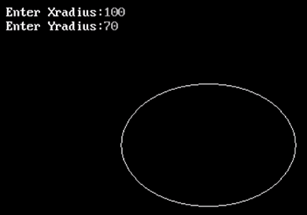

#include <stdio.h>
#include <conio.h>
#include <graphics.h>
#include <dos.h>
int main()
{
int gdriver = DETECT, gmode, err;
long midx, midy, xradius, yradius;
long xrad2, yrad2, twoxrad2, twoyrad2;
long x, y, dp, dpx, dpy;
initgraph(&gdriver, &gmode, "C:/TURBOC3/BGI");
printf(" Enter Xradius:");
scanf("%ld",&xradius);
printf(" Enter Yradius:");
scanf("%ld",&yradius);
/* finding the center postion to draw ellipse */
midx = getmaxx() / 2;
midy = getmaxy() / 2;
xrad2 = xradius * xradius;
yrad2 = yradius * yradius;
twoxrad2 = 2 * xrad2;
twoyrad2 = 2 * yrad2;
x = dpx = 0;
y = yradius;
dpy = twoxrad2 * y;
putpixel(midx + x, midy + y, WHITE);
putpixel(midx - x, midy + y, WHITE);
putpixel(midx + x, midy - y, WHITE);
putpixel(midx - x, midy - y, WHITE);
dp = (long) (0.5 + yrad2 - (xrad2 * yradius) + (0.25 * xrad2));
while (dpx < dpy) {
x = x + 1;
dpx = dpx + twoyrad2;
if (dp < 0) {
dp = dp + yrad2 + dpx;
} else {
y = y - 1;
dpy = dpy - twoxrad2;
dp = dp + yrad2 + dpx - dpy;
}
putpixel(midx + x, midy + y, WHITE);
putpixel(midx - x, midy + y, WHITE);
putpixel(midx + x, midy - y, WHITE);
putpixel(midx - x, midy - y, WHITE);
}
dp = (long)(0.5 + yrad2 * (x + 0.5) * (x + 0.5) +
xrad2 * (y - 1) * (y - 1) - xrad2 * yrad2);
while (y >0) {
y = y - 1;
dpy = dpy - twoxrad2;
if (dp > 0) {
dp = dp + xrad2 - dpy;
} else {
x = x + 1;
dpx = dpx + twoyrad2;
dp = dp + xrad2 - dpy + dpx;
}
putpixel(midx + x, midy + y, WHITE);
putpixel(midx - x, midy + y, WHITE);
putpixel(midx + x, midy - y, WHITE);
putpixel(midx - x, midy - y, WHITE);
}
getch();
closegraph();
return 0;
}
Output:
